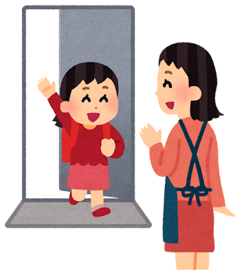
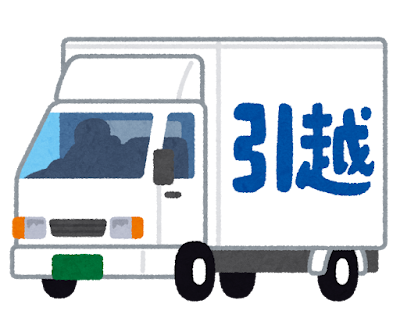

ミニ多読 日本に引っ越ししました
久しぶりに会った二人が近況を話す — 一個場景一張圖，先看圖猜情境，再讀日文
1.0x

Ａ
おかえりなさい。
Okaerinasai.
你回來啦。
Ｂ
ただいま。
Tadaima.
我回來了。
Ａ
お仕事はどうですか。
Oshigoto wa dou desu ka.
工作還好嗎？
Ｂ
最近やめました。日本に引っ越ししました。
Saikin yamemashita. Nihon ni hikkoshi shimashita.
最近辭掉了。搬到日本來了。

Ａ
いつですか。
Itsu desu ka.
什麼時候（搬的）？
Ｂ
３か月前、４月です。夫の仕事です。
Sankagetsu mae, shigatsu desu. Otto no shigoto desu.
三個月前，四月。因為我先生的工作。

Ａ
どこですか。
Doko desu ka.
（搬到）哪裡呢？
Ｂ
東京の中央線、荻窪です。
Toukyou no Chuuousen, Ogikubo desu.
東京的中央線，荻窪。
Ａ
荻窪はどうですか。
Ogikubo wa dou desu ka.
荻窪怎麼樣？
Ｂ
平和です。とても静かです。
Heiwa desu. Totemo shizuka desu.
很安寧，非常安靜。
Ｂ
渋谷や新宿はとても人が多いです。
Shibuya ya Shinjuku wa totemo hito ga ooi desu.
澀谷、新宿那種地方人非常多。

Ａ
日本に何年いますか。
Nihon ni nannen imasu ka.
會在日本待幾年？
Ｂ
１年か２年です。今、日本語を勉強しています。
Ichinen ka ninen desu. Ima, nihongo o benkyou shite imasu.
一年或兩年。現在正在學日文。
插圖：いらすとや（かわいいフリー素材集）